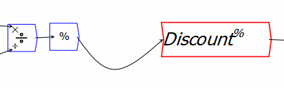

A wire can be bent by hovering over it, at which point a blue dots (``handle'') will appear. Click on the blue dot--or anywhere along the line--and the line will turn into a curve, with 3 ``bezier'' points showing the degree of curvature.

Additional curves can be added to a line, which can allow you to connect variables without drawing a line across some other entity.

However, it can be preferable to copy a variable and paste into a document multiple times, rather than having curved wires cluttering up a diagram. Wires can also become excessively kinked by curving them, and there is a context-menu command to straighten a curved line.